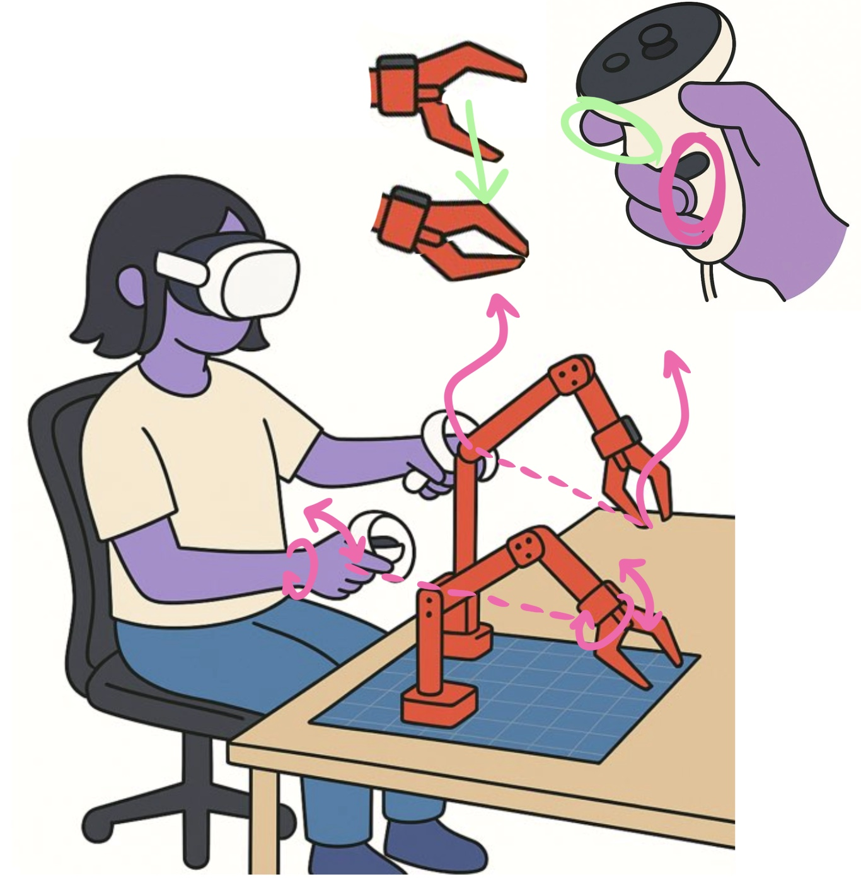

Tactile Robotics - VR Remote Teleoperation
Immersive Robot Control Experience
← Back to Main
🤖 Robot Status
Left Arm
Right Arm
VR Connected
🥽 VR Remote Teleoperation Instructions

Setup:
Open this same page
Loading...
in your VR headset's browser and click "Start Controller Tracking"
Grip Button:
The robot arm's gripper tip will track your relative controller movements as long as you hold the grip button
Controller Orientation:
Roll and pitch of your controller will be matched on the wrist joint of the robot arm
Trigger Button:
The gripper stays closed while you hold the trigger button. Release the trigger button to open the gripper.
Book a demo